The whole menu
We make delicious plugins. Sixteen audio plugins, each one a little needle-felt kitchen you play like a toy. AU, VST3 and AAX for Mac, VST3 for Windows.
 Orange CrusherDistortion
Orange CrusherDistortion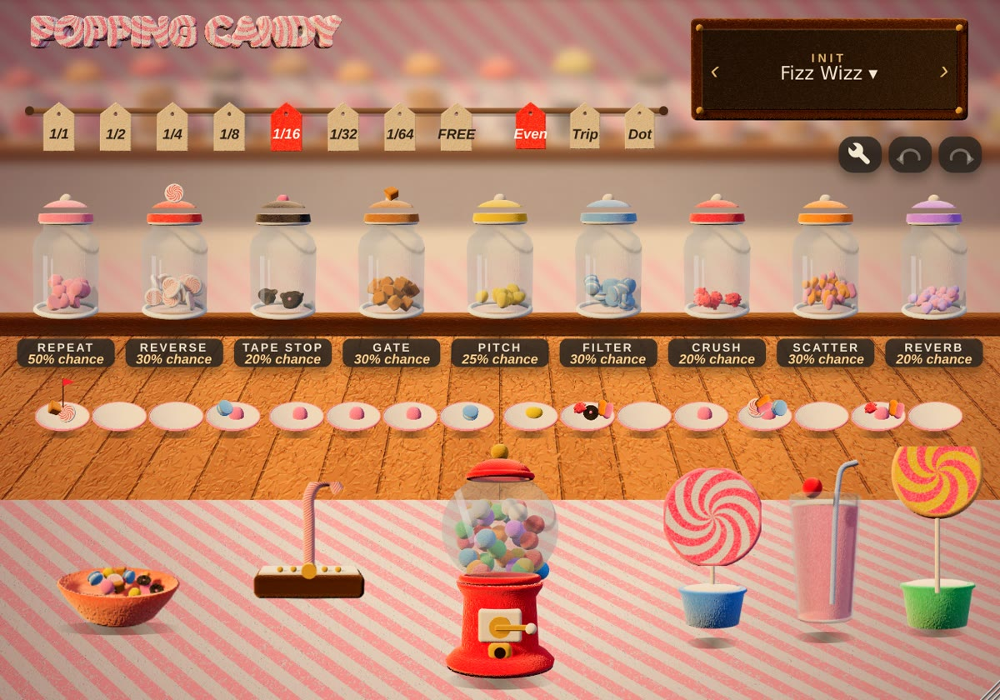
Popping CandyGlitch and stutter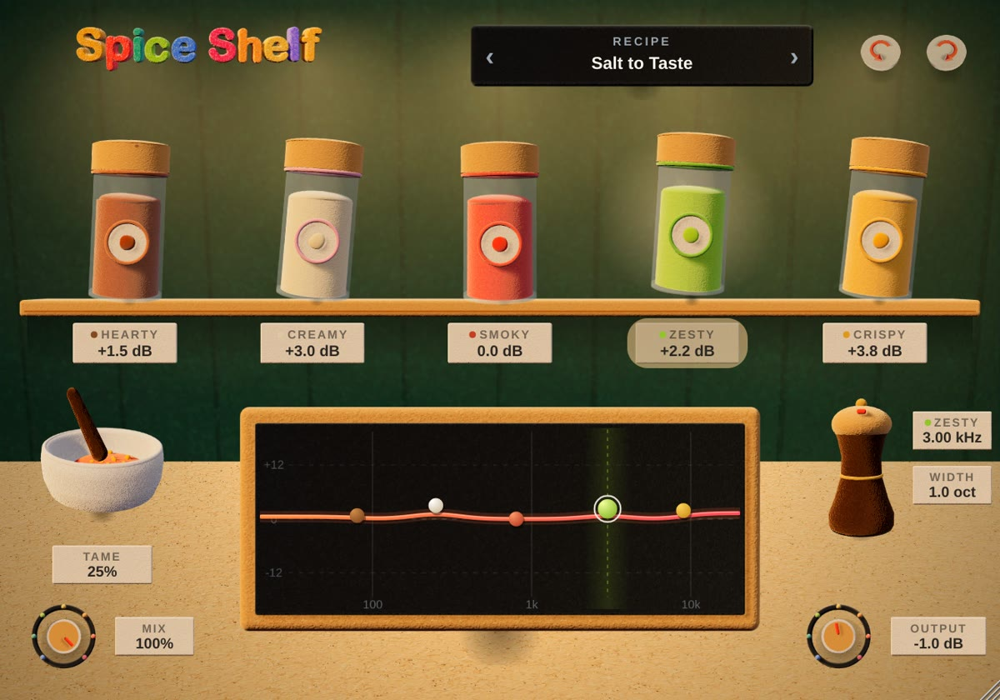
Spice Shelf EQEqualizer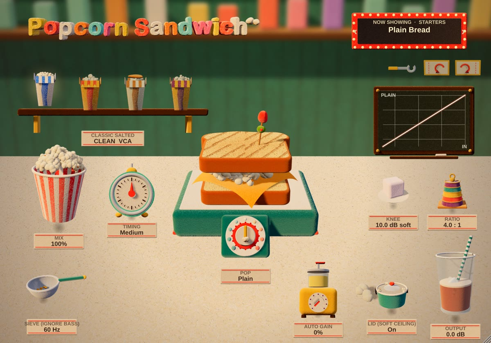
Popcorn Sandwich CompressorCompressor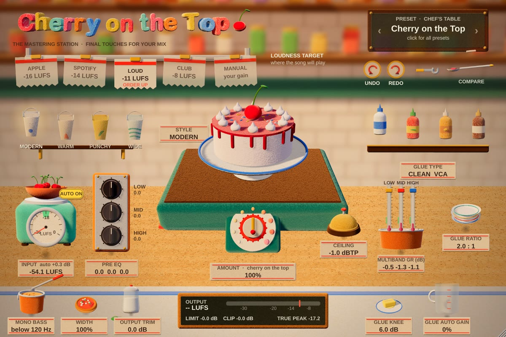
Cherry on the Top MasteringMastering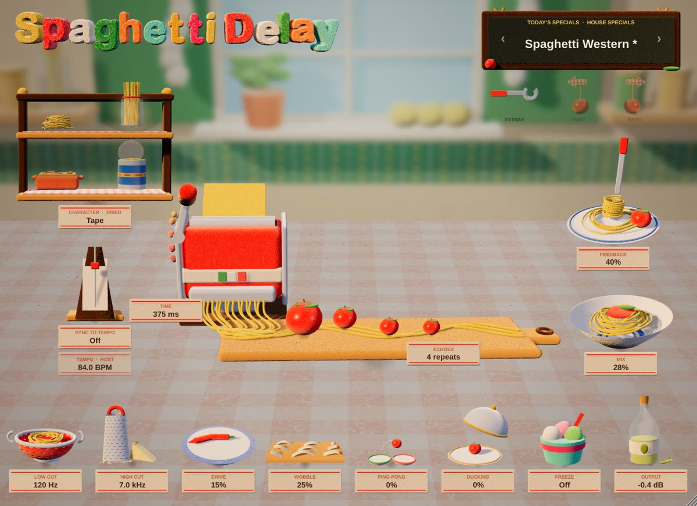
Spaghetti DelayDelay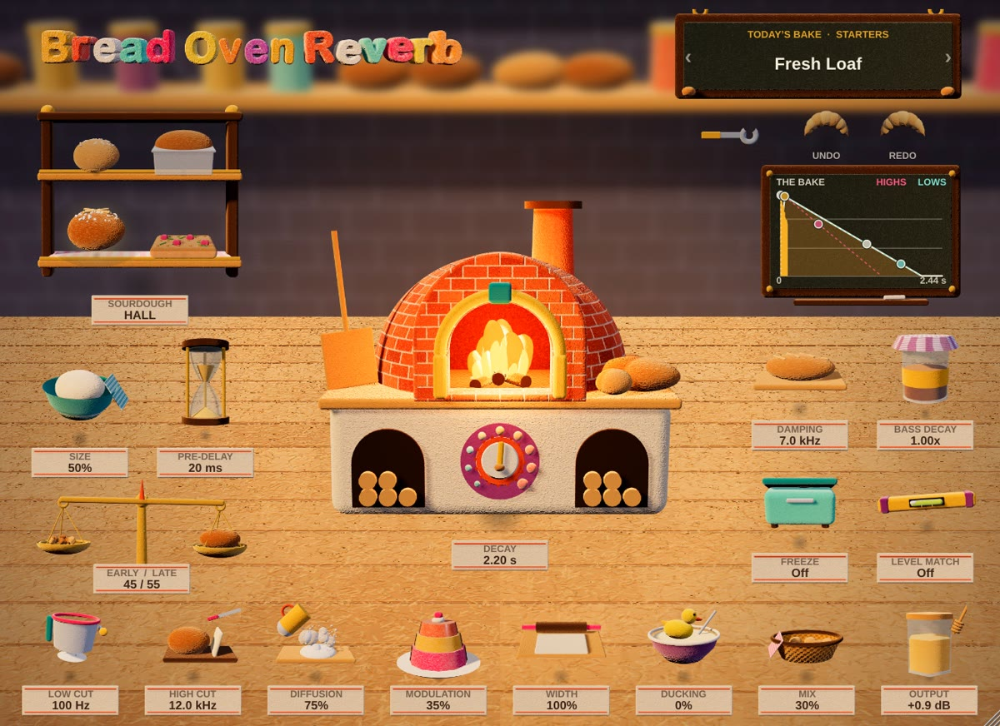
Bread Oven ReverbReverb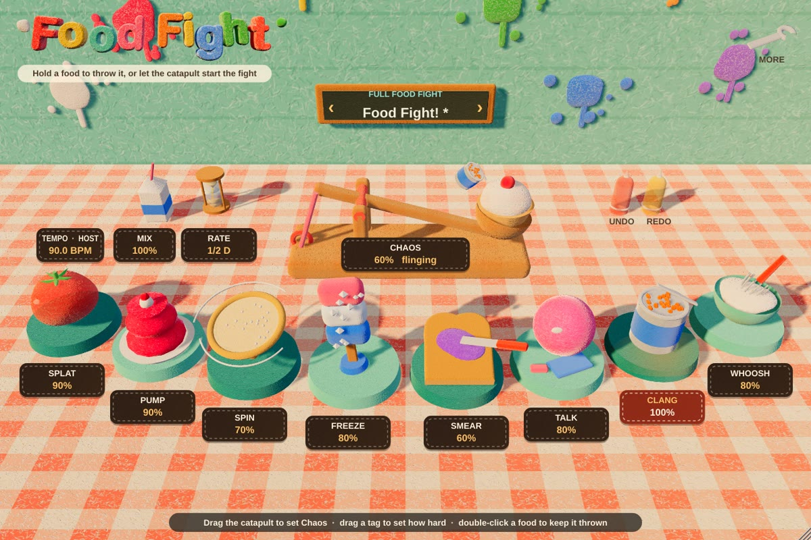
Food FightPerformance multi-effect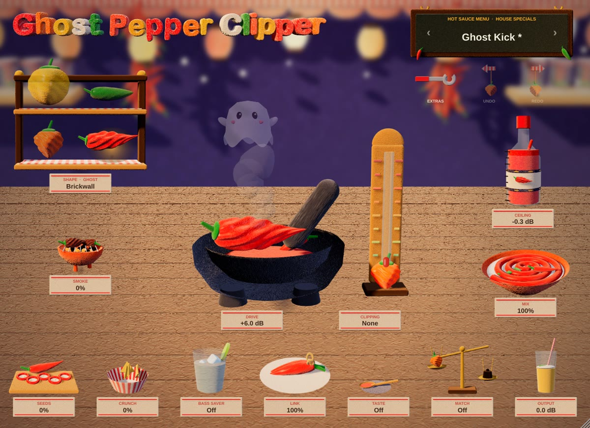
Ghost Pepper ClipperClipper Hot-o-PanAuto-pan
Hot-o-PanAuto-pan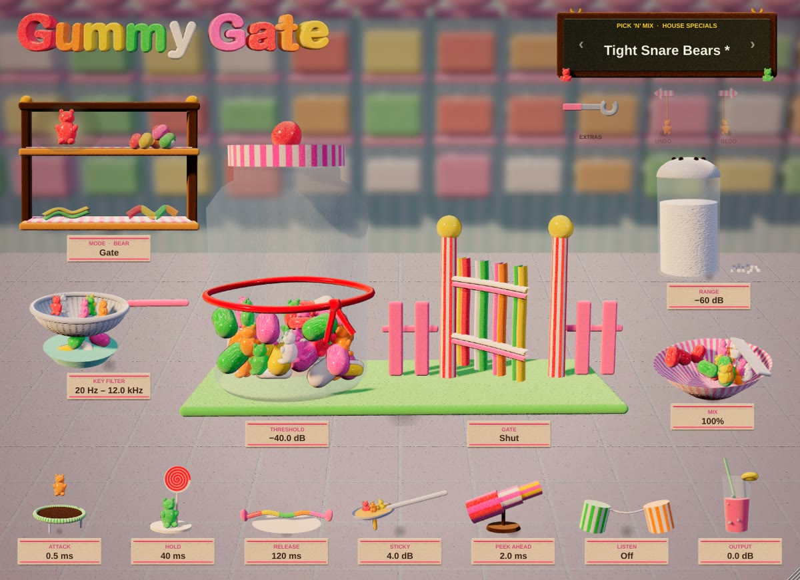
Gummy GateGate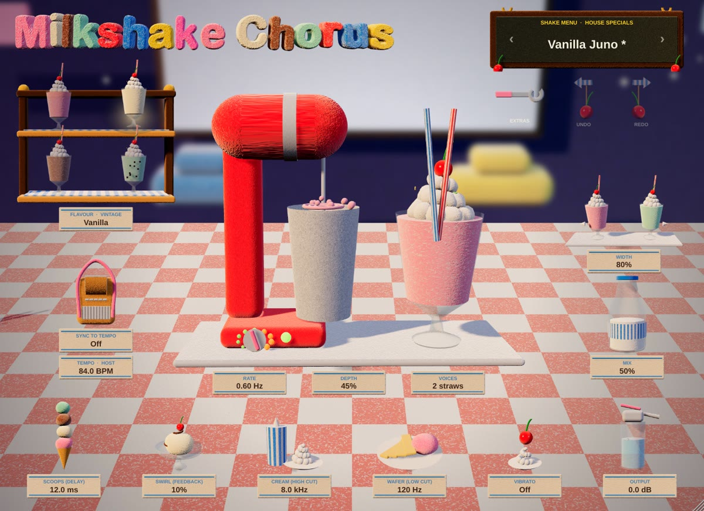
Milkshake ChorusChorus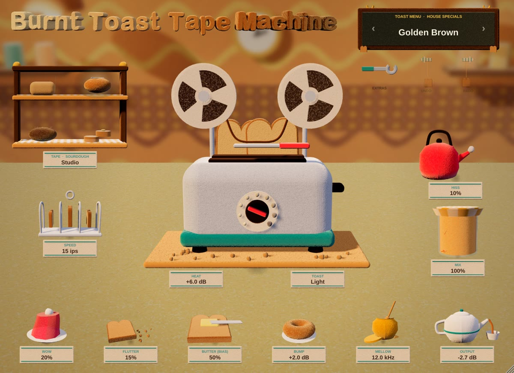
Burnt Toast Tape MachineTape saturation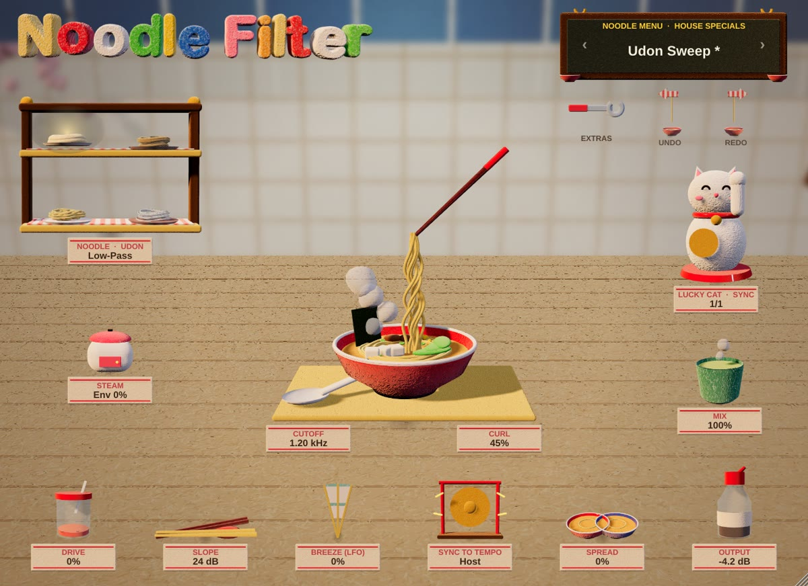
Noodle FilterFilter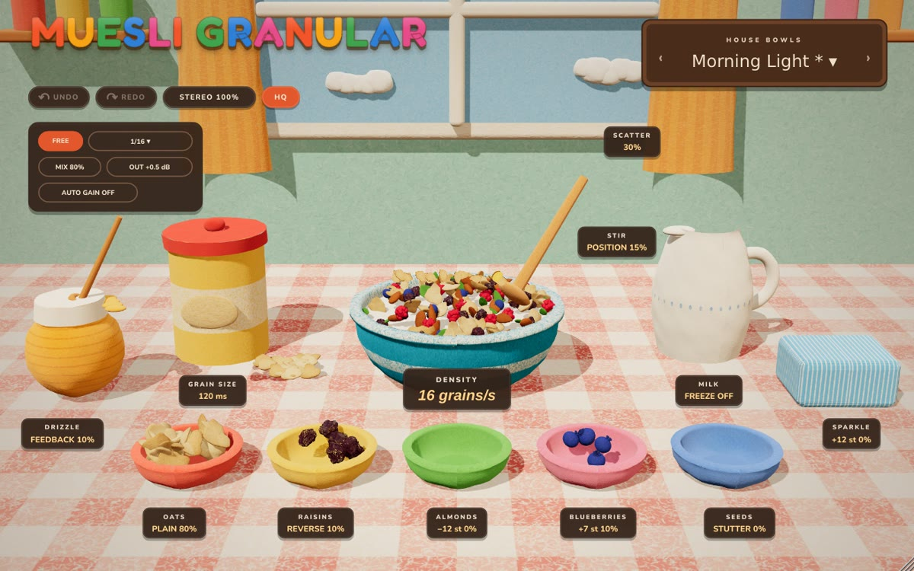
Muesli GranularGranular Butter SpreadStereo widener · free
Butter SpreadStereo widener · free